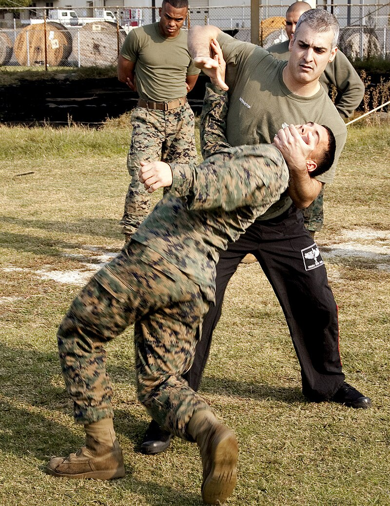

Krav Maga
Krav Maga je moderní systém sebeobrany pocházející zIzraele. Je navržen tak, aby byl jednoduchý, efektivní a použitelný v reálných situacích, kde jde o rychlou reakci a přežití. Techniky kombinují prvky z boxu, juda, zápasu a dalšíchdalších bojových sportů
, ale důraz je kladen na instinktivní pohyby. Krav Maga učí obranu proti úderům, kopům, škrcení, držení i proti ozbrojeným útokům. Velká část tréninku spočívá také v práci se stresem, rychlém rozhodování a situacích, které mohou nastat na ulici. Tento systém je dnes populární po celém světě – používá se v armádě, policii i mezi civilisty, kteří chtějí získat základní sebeobranu a větší sebedůvěru.

Zakladatelem Krav Magy bylImi Lichtenfeld, který se narodil v roce 1910 v Bratislavě. Byl sportovec, boxer a zápasník, což ovlivnilo technickou podobu systému. Ve 30. letech se aktivně podílel na ochraně židovské komunity před útoky extremistických skupin, což mu poskytlo skutečné zkušenosti s pouličními konflikty. Později emigroval do tehdejší Palestiny, kde začal trénovat jednotky židovské obrany. Po vzniku Izraele vypracoval systém praktické sebeobrany pro izraelskou armádu. Imi postupně upravil techniky i pro civilní použití a založil výcvikové školy, kde se jeho metoda dále rozvíjela. Jeho cílem bylo vytvořit jednoduchý, účinný a logický systém, který dokáže zvládnout každý.